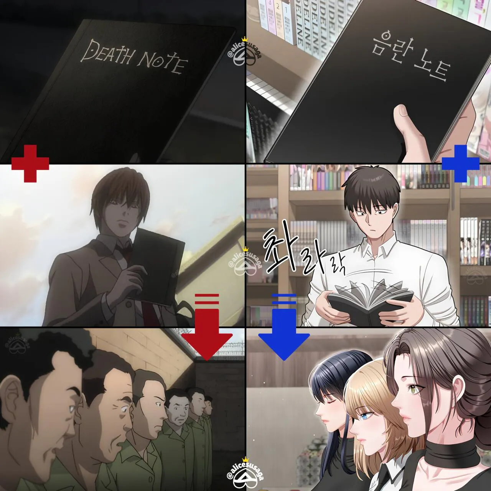
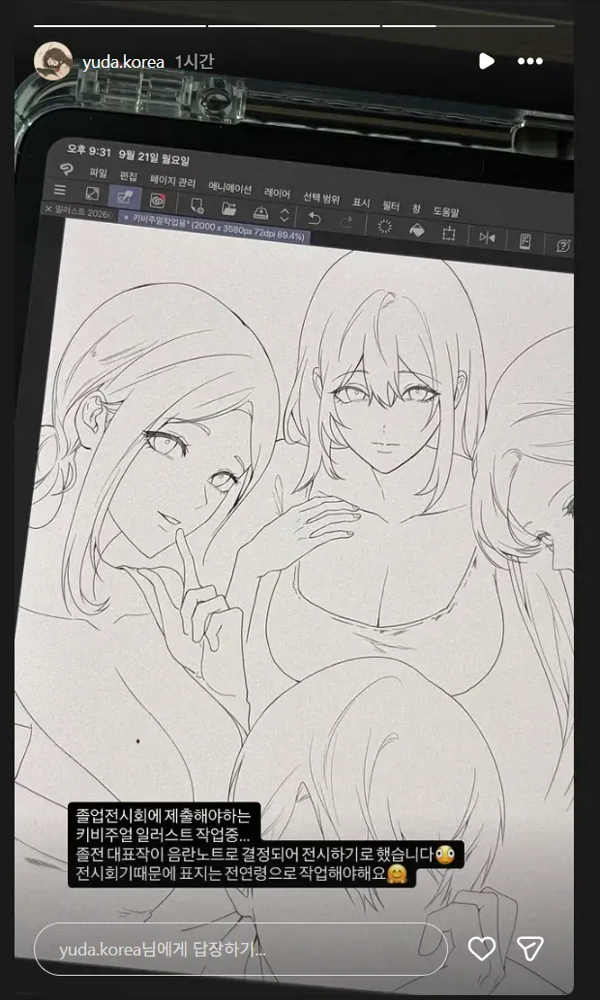

44 · 10 · 5 시간 전 · 원문


제목 : 음란노트에 적는대로
수집 당시 댓글 10개
딜바다 · 16 시간 전
ㄷㄷㄷㄷ 유명한 작가님이 졸업도 아직이라니
뽀롱뽀롱뾰로로 · 15 시간 전
ㅋㅋㅋ 류크 대신 삼신할매 나오나? ㅋㅋ
↳ 답글 · 도윤회 · 5 시간 전
눈 교환하면 가임기 기간도 보이겠네
↳ 답글 · 착한말착한말 · 3 분 전
?? : 소재 ㄱㅅ
마리야 · 5 시간 전
에이크노 · 5 시간 전
번항게 · 3 시간 전
뭔 배꼽먹은 옷이 있냐
잉어빵붕어킹 · 2 시간 전
이상하게 야한웹툰은 존나 양산형같이 다 똑같냐 뭘 봐도 배경 그림체 색감 이런게 똑같은데서 배워서 하는건지 다 비슷비슷해
↳ 답글 · 빠나나킥옆차기 · 1 시간 전
먹히니까
동시흥분기점 · 1 시간 전
팬티노트 아시는 분?

ㄷㄷㄷㄷ 유명한 작가님이 졸업도 아직이라니